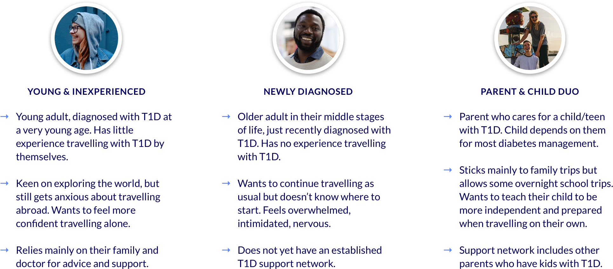

I. Discovery Phase
Initial research
My team reviewed a variety of literature and online publications in order to better understand the problem space and identify current gaps in technology. We scoured online communities, forums, and social media to collect some initial data (in the form of comments, discussions, etc.) from representative users.
Gaining deeper insights from T1Ds
In order to dig deeper into the underlying factors that influence their travel experiences, it was incredibly important for us to conduct 1-on-1 interviews with T1Ds. We created a safe and open environment where T1Ds were comfortable sharing their lived experiences and were able to express how these challenges affected them on an emotional level. At the end, we left with five key takeaways:
1
Inherent fear and anxiety are associated with a T1D’s first few trips.
2
Feelings of fear and anxiety intensify when travelling to an unfamiliar destination or a remote location.
3
Most stress is generated during the planning phase, since it involves thinking about worst-case scenarios.
4
T1Ds rely heavily on supports and resources to help them prepare for their first few trips.
5
Travel companions ease the travelling process by providing support throughout.
Exploring challenge areas
The interviews also provided insight into the main challenge areas that T1Ds encounter while travelling:
Awareness and control of blood glucose levels
Determining how unfamiliar foods, activities, or time zone changes affect blood glucose levels can put T1Ds in a stressful and precarious situation.
Getting help in an emergency situation
Determining how unfamiliar foods, activities, or time zone changes affect blood glucose levels can put T1Ds in a stressful and precarious situation.
Making a detailed medication list
Not only do T1Ds keep a record of their medication and insulin pump settings, they may also have to anticipate that certain countries have different names for the insulin they use.
Navigating airport/border security
If security personnel are unfamiliar with type 1 diabetes, T1Ds may receive questions about their insulin pump or snacks that they are bringing, which can be a frustrating and uncomfortable interaction.

Gathering of supplies
Figuring out what insulin pump and glucose monitoring supplies are needed and determining how much they should bring as a backup can be a daunting task.
Storage of supplies
Ensuring that their supplies, especially insulin, are kept at the right temperature and remain intact can be challenging, especially if encountering varying environmental conditions.
Icons made by Smashicons, photo3idea_studio, Freepik & Pixelmeetup from flaticon.com.
Focusing in on our user types
We realized that the emotional stress surrounding travel for T1Ds stemmed from a general lack of knowledge/experience. Those who had lived with T1D for much longer had already figured out their own methods and processes for travel, simply based on lived experience. Where there was a greater gap in knowledge was for those who were less experienced with T1D travel, such as youth/young adults with T1D, or someone who was recently diagnosed with T1D in a later stage in life.
We decided to focus on the following 3 user types, all with limited experience travelling with T1D by themselves: 1) Young & Inexperienced, 2) Recently Diagnosed, and 3) Parent & Child Duo.
